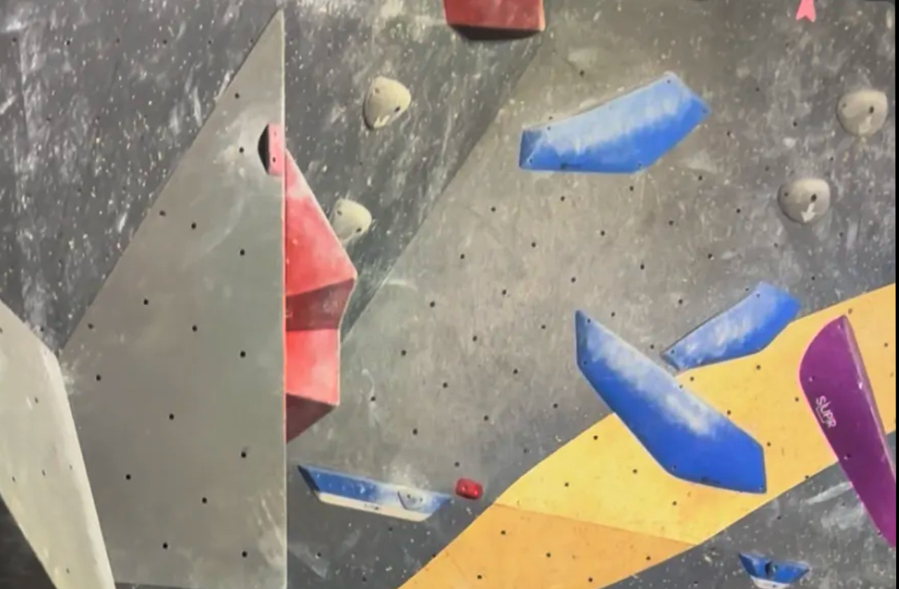
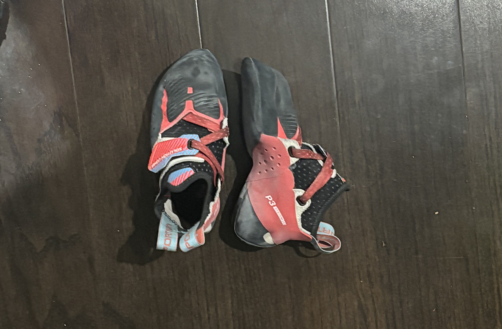
Introduction
I used to be one of those people who didn’t really like taking too many pictures. I had always thought, I’m already living the experience, if I stop to take pictures or record, I’ll miss living in the moment. After I started climbing, I quickly realized that logic was flawed. Taking pictures or recordings does not make you miss the moment, it allows you to revisit it—by recording my climbs not only was I able to revisit exciting climbs long after they’ve been taken down at the gym, but also learn and improve by studying my movement as an observer.
If you've ever been inside a climbing gym, you have definitely seen people propping up their phones on a tripod to record their climbs. Capturing and remembering climbs is a huge aspect of climbing culture. Climber will oftentimes even record the climbs they were unable to complete to study their movements and plan forwards on what to do better on the next attempt. In fact, I have more recordings of unfinished climbs than I do of finished climbs, I've learned recording even the failures are important. Recording moments, the good, the bad, and the ugly, are important. On this page, you will find pictures of important moments in a climb. I've also taken the opportunity to include some informative images of important types of climbing holds and climbing equipment, these will be helpful for anyone who is a beginner or looking at getting into climbing.
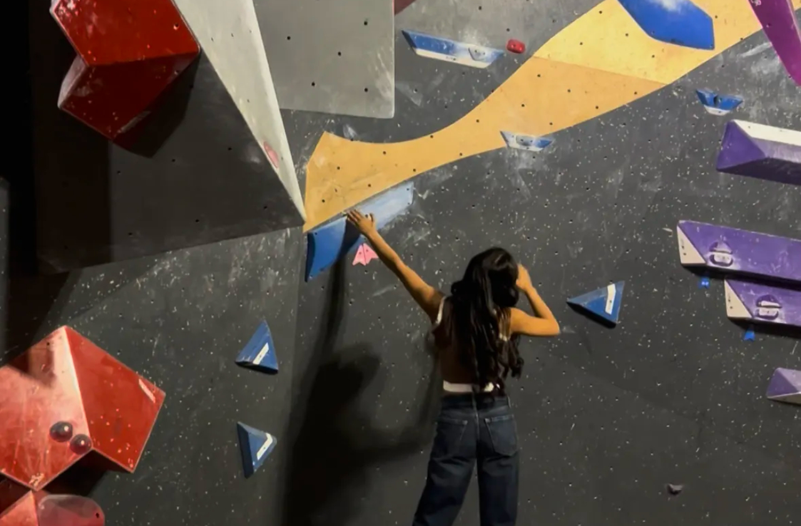

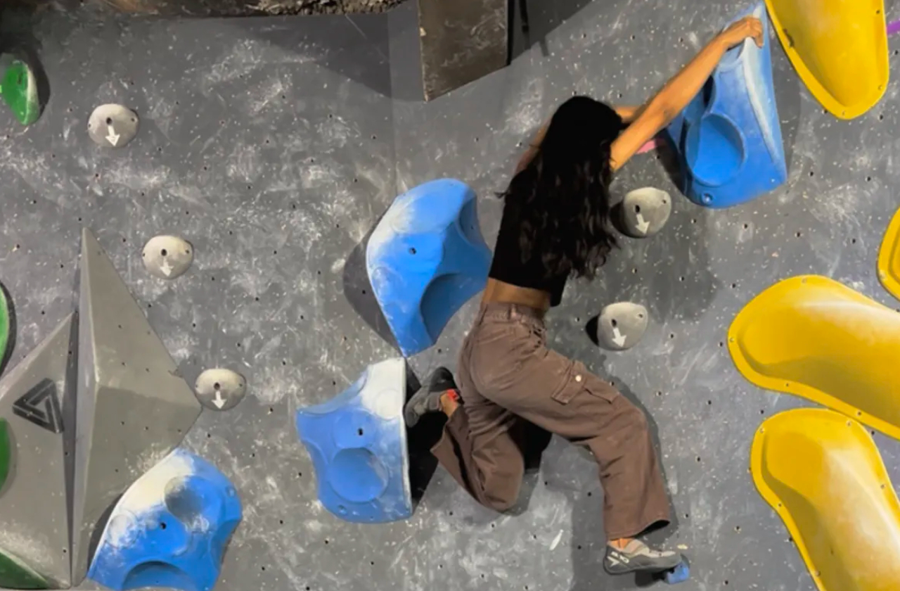
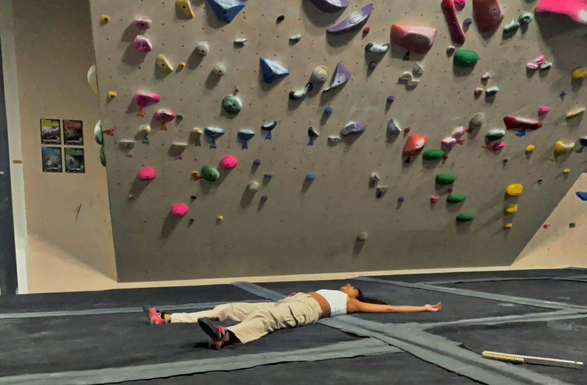
The Phases of a Climb
In this first group of images I've captured some important moments in a climb.
The first image at the top left is of me reading a climb. I am studying the holds and mentally planning out my moves. This planning is important because once you are on the wall, stopping to think of the next move wastes energy. Having a general idea of what sort of movements to do ("the beta") can save a lot of time and energy.
The second image (top right) is me actually doing a climb, once you are on the wall, it is important to commit to every move. This is a picture of me getting a difficult dynamic (“dyno”) move that I had been struggling with for weeks. Progression in climbing occurs very slowly, and when you do get better there are always harder climbs that will have you questioning how it is even physically possible—before a competition climber flashes (does it first try) it for warm-up. It may seem like you have plateaued or that you are not improving as quickly, at times like those, it can be valuable to look back at all the failed climbs that you were eventually able to complete by persisting—like this one was for me!
This brings us to the next image (bottom left) of me completing a climb! This is the most exciting part of the climb, after all the tries and falls, finally getting both hands on that “Top” hold that seemed oh so far away just moments ago, this the feeling that gets many people addicted to climbing.
The last image on the bottom right is the where you will be most of the time while climbing, on the floor. 90% of climbing is falling. Falling, and trying again, and falling again, and after a few cycles of that, you might complete the climb—maybe. The falling is just as important as the climbing, because it teaches you to get up again.
Climbing Holds
This second group of images is some of the main types of climbing hold you will face when climbing. This is by no means a comprehensive list, and there are many many types of holds, and all types of holds come in different shapes and sizes. I will just be going over how certain holds feel and how to approach them.
The first hold I have pictured on the top left is the “crimp”. A crimp is a tiny ledge, you will likely be unable to get your whole finger in it, and will have to put all of your trust and weight into the tips of your fingers.
The red holds in the top right image are a fan favorite, the “jugs”. These holds are a big and deep, you can get a very good grip on these. These holds will feel the safest, but are rare in more advanced climbs.
On the bottom left is the ”sloper”, these holds require a very specific technique to even get a grip on. They are smooth and therefore offer very little friction to grip onto, but if you can get your center of gravity in the right position under the hold, you may be able to hold on.
The last hold I have pictured on the bottom left, in the red boxes, are pinches! These are my personal favorite, they require you to use your fingers and thumb to “pinch” the hold. These will definitely give you a forearm pump.
Other common types of climbing holds that I don’t have pictured here are: pockets, undercling, side pull, volume, and gastons, foot jibs. There are specific techniques to approaching all of these holds, however, one hold can be used many different ways and nothing, expect the rocks, is set in stone. What makes bouldering so fun is that you can get creative, there are no rules, if something else works for you—then thats your beta. In fact, sometimes going against the technique is more appreciated.
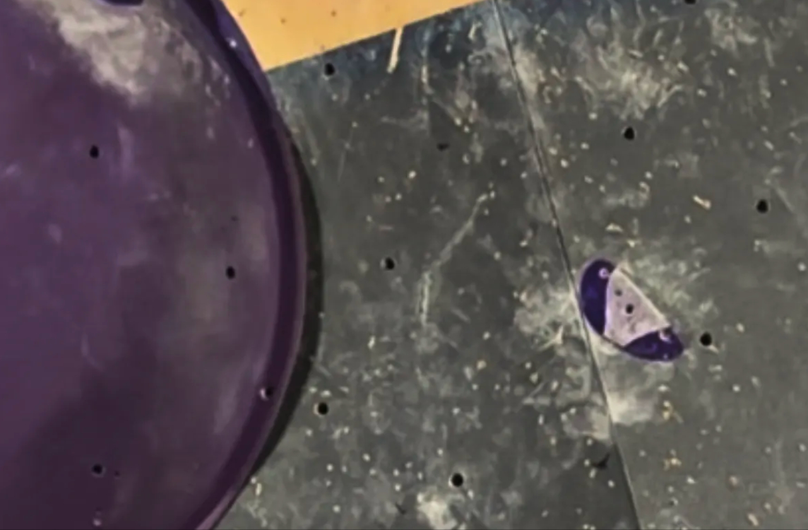
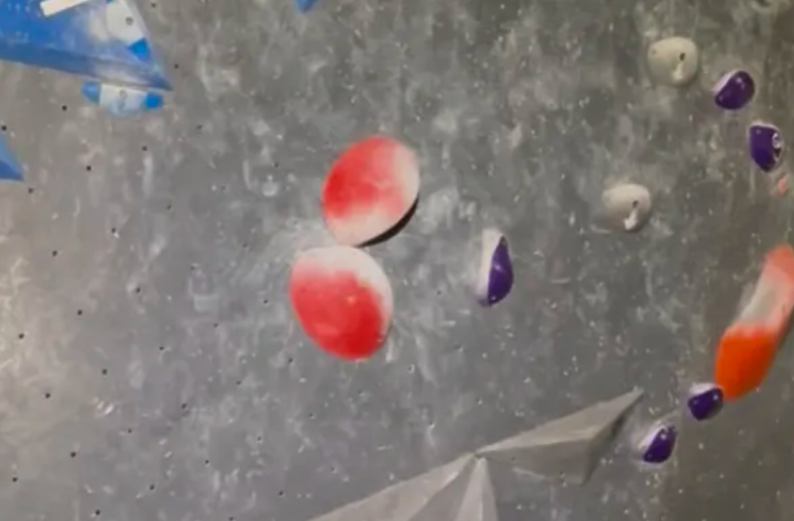
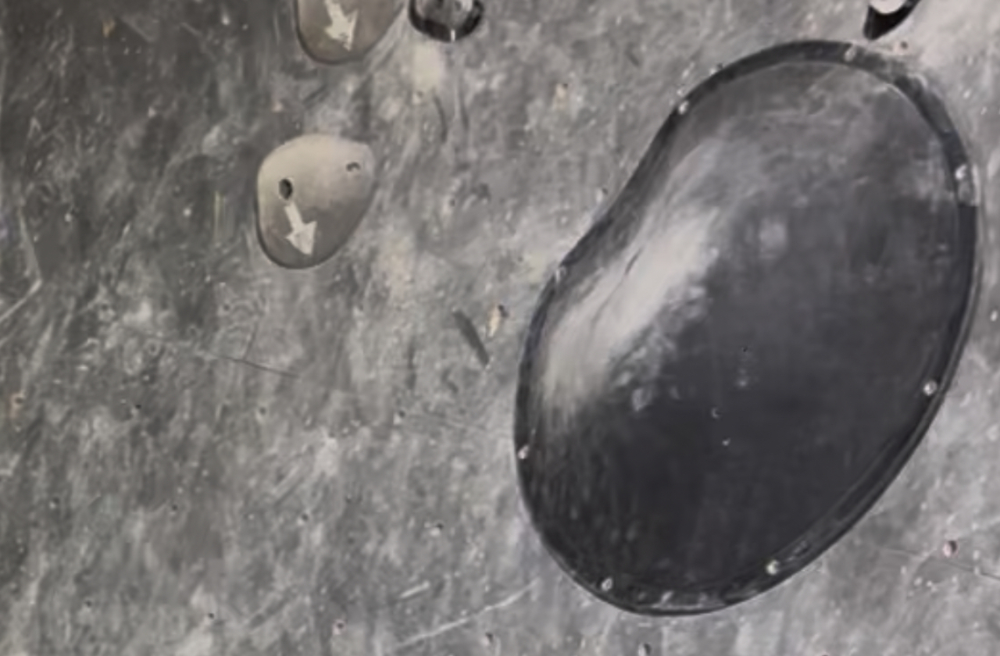
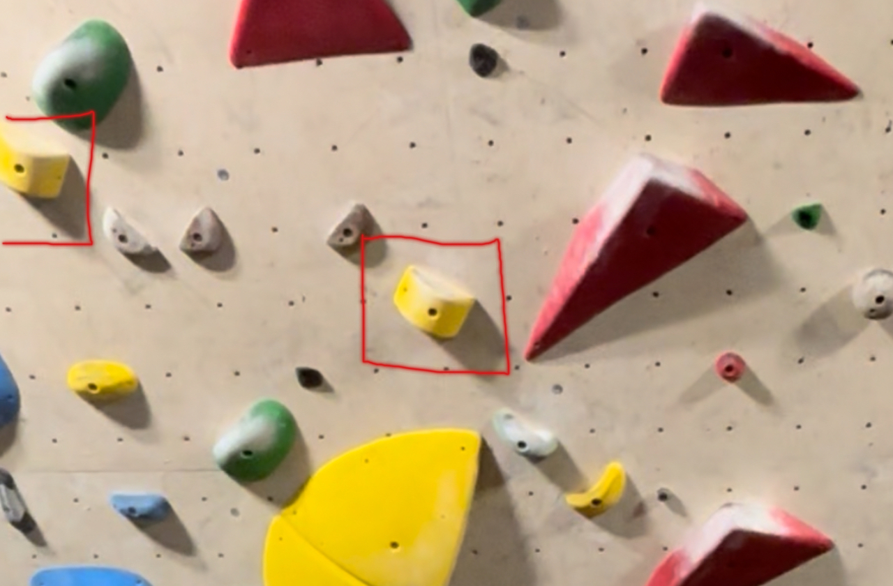
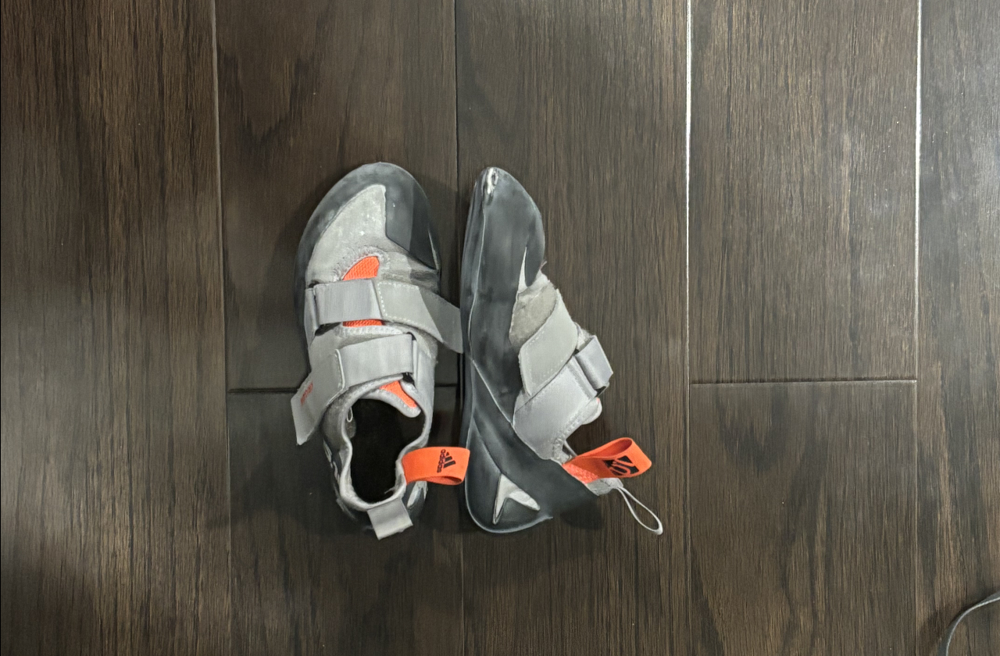
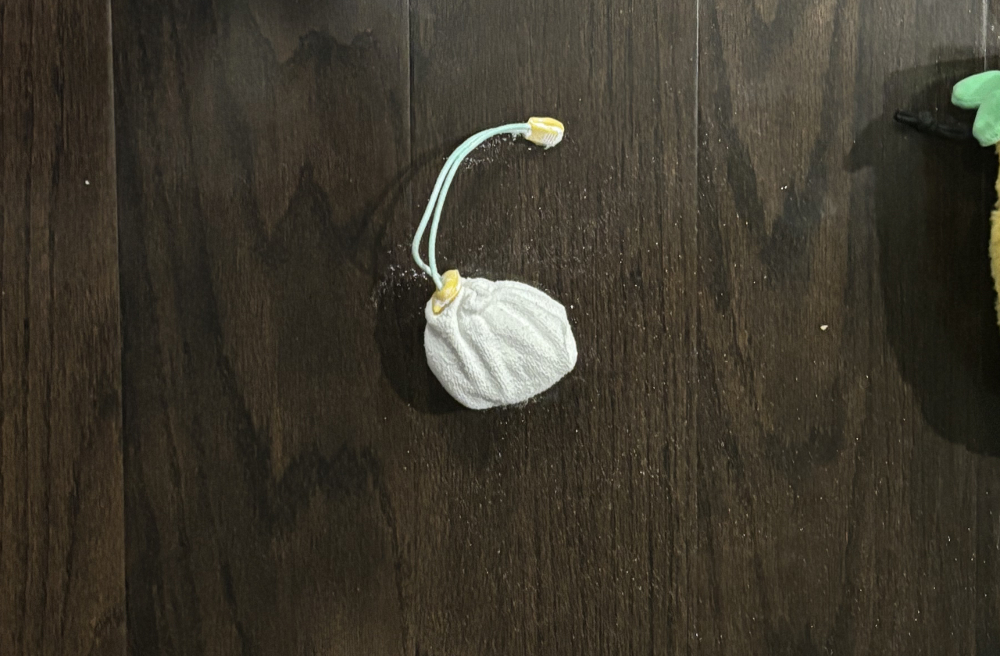
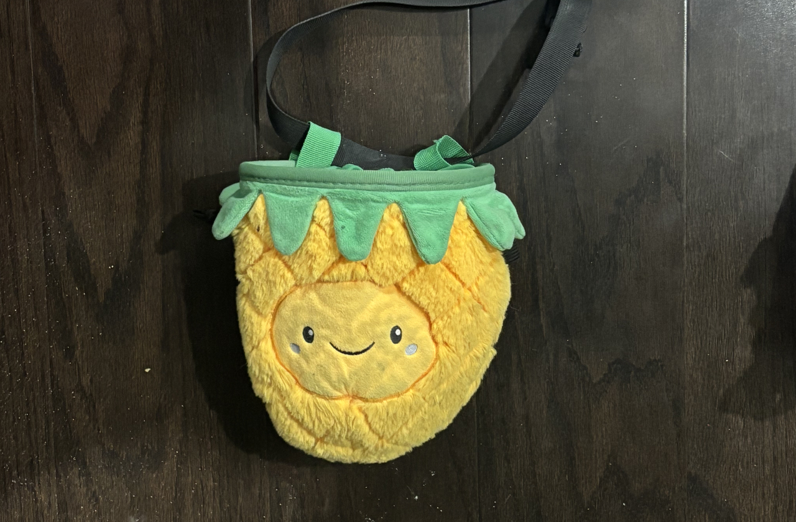
Climbing Equipment
In the third group of images, I have some climbing equipment. For indoor climbing, there isn’t much equipment necessary.
The top and bottom left images are of climbing shoes, pretty much the only equipment that you absolutely need to get started. Most climbing gyms offer rentals and those are pretty good to start you off. However, after a certain point, climbing shoes become somewhat of a necessity in order to advance onto some harder climbs. The shoes on the top are beginner shoes, they are comfortable and just grippy enough to get you through most climbs. They are not very angled and don’t flex as much, but these shoes got me through many difficult climbs. The ones on the bottom are more advanced shoes, these are not very comfortable but are designed for top tier performance on the wall, you can put your full faith into these shoes. They are angular and flexible, perfect for advanced techniques like toes hooks and heel hooks.
The next two items, the chalk and chalk bag, are not strictly necessary to start climbing. Especially in indoor gyms, theres typically enough residual chalk on the climbs to get me through the day most of the time. The chalk is pretty important nonetheless, they help absorb moisture from your hands and allow you the get the best grip on the climbs. The chalk bag, sometimes they come in cute variations like this pineapple, is just to contain the chalk because the chalk is loose and get everywhere. In the picture, I have by loose chalk stored in a chalk sock, and the chalk sock goes inside the chalk bag. The sock just adds extra containment, it will get the chalk out a little but at the time, but will still keep it contained if I accidentally turn by chalk bag upside down. This is helpful on overhangs or bathangs where you have to turn your whole body upside down—you don’t want your chalk falling everywhere.